上
升
的
海
平
面
Sea
Level
Rise


造成全球暖化及氣候變遷的主要原因為溫室氣體的排放。
而人類活動導致大量溫室氣體排入空氣中。
你知道有甚麼樣的人類活動正在排放這些溫室氣體嗎？
砍伐森林與雨林
大規模移除森林植被，導致碳吸收能力下降，影響生態平衡。
工廠排放廢氣
工業生產過程中釋放溫室氣體和污染物，對環境和空氣品質造成影響。

城市排放廢氣
交通和建築活動產生的廢氣增加城市空氣污染，導致氣候變遷。
而自1993年起全球海平面平均上升已經達到


100mm
海平面上升帶來了許多危害與影響，你知道有那些嗎？


 颱風與大潮導致的海岸侵蝕
颱風與大潮導致的海岸侵蝕
 海水入侵引發地下水鹽化
海水入侵引發地下水鹽化
 低窪地區洪患與永久淹沒風險
低窪地區洪患與永久淹沒風險
 基礎設施損害與國土流失
基礎設施損害與國土流失
我們可以怎麼做？
資料來源： Greenpeace 綠色和平


大眾運輸通勤
改變通勤方式可減少碳排放與空氣污染，交通運輸約佔臺灣碳排放總量的 14%。
使用節能家電
節能標章冷氣比一般冷氣每年省 500-700 度電，減碳 300-400 公斤。
拒用塑膠製品
塑膠生產碳排放佔全球 6%，等同航空業總排放，減塑可保護環境並減緩氣候變遷。
少肉多蔬的飲食習慣
吃一份牛排產生 330 公克二氧化碳，相當於開車 4.8 公里，畜牧業碳排放佔全球 18%。
重複利用降低物慾
衣物與物品生產運送累積碳足跡，延長使用壽命、重複利用可減少浪費。
你是否希望減緩海平面下降呢？